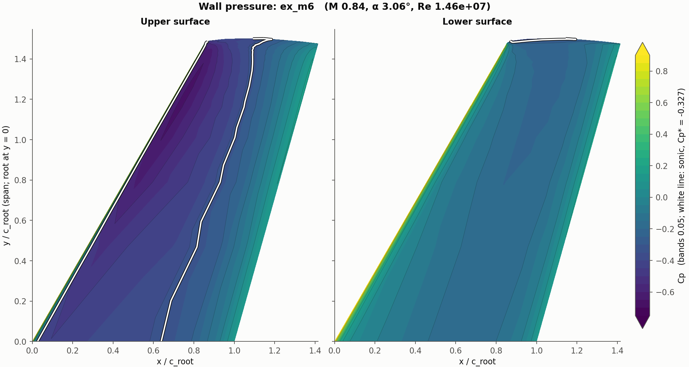

A 3D wing¶
The solver runs 3D grids with the same two JSON files as 2D: the dimension is
the grid's. It does not generate 3D grids: make a structured grid with your
mesher and point the case at the file. The worked example is
examples/onera_m6_sa, the ONERA M6 wing at NASA's Turbulence Modeling
Resource conditions (case 2308), on a small grid that ships with the example.
1. What the grid file must be¶
- Format: Plot3D with three index directions (formatted or binary, single or double precision). CGNS is read in 2D only for now.
- One block. Multi-block 3D grids are not supported yet.
- What lies on each of its six sides is found from the coordinates:
- two opposite sides whose nodes coincide become an interface (the seam of an O-grid round the wing section);
- a side collapsed to a line (every face of zero area) becomes a pole, provided it lies round a seam direction with an even number of cells. The rounded tip of the example grid closes this way;
- every other face is named by the box rules of
domain.patches(section 2).
- Axes:
xalong the chord,yalong the span,zup. The angle of attack turns the freestream in thex-zplane. - The wall-normal index should be
j. The implicit solver's preconditioner solves alongjlines, which is what makes thin wall cells affordable. A wall on another index has not been tested. - A block that is left-handed is reversed in
kon reading. A folded grid (a cell of non-positive volume) is refused.
A half model with the root on a symmetry plane, as in the example, is the usual set-up.
2. case.json¶
{
"general": {"case_name": "onera_m6_sa"},
"domain": {
"grid": "file",
"file": "om6_strct_16x44x24.ufmt",
"patches": [
{"name": "symmetry", "y_max": 1e-9},
{"name": "wall", "x_min": -1.0, "x_max": 3.0, "y_max": 3.0, "z_min": -1.0, "z_max": 1.0},
{"name": "farfield"}
],
"reference_area": 1.15315084119,
"reference_length": 0.8016729585,
"moment_centre": [0.0, 0.0, 0.0]
},
"boundary_conditions": {
"wall": {"type": "no_slip_wall"},
"farfield": {"type": "far_field"},
"symmetry": {"type": "symmetry"}
},
"freestream": {"mach": 0.84, "alpha_deg": 3.06, "reynolds": 14.6e6, "temperature": 540.0},
"material_properties": {"dynamic_viscosity": "sutherland", "sutherland_temperature": 198.6},
"turbulence": {"model": "sa_noft2"}
}
Patches. A Plot3D file has no boundary names, so each boundary face takes
the name of the first rule whose box contains its midpoint; a bound left out
is unbounded. Here the root plane y = 0 is symmetry, the faces inside a
box round the wing are wall, and the last rule, with no bounds, takes
everything left: the far field. A face that matches no rule is an error, so
end with a rule without bounds.
Reference values. reference_area is required in 3D: lift, drag and side
force are per q_inf * reference_area. For a half model give the half
model's area. reference_length and moment_centre are for the pitching
moment: about the y axis through moment_centre, nose-up positive, per
q_inf * reference_area * reference_length, pressure and friction together.
Reynolds number. Per unit length of the grid. The example grid has a root
chord of 1, so 14.6e6 is the Reynolds number per root chord. Use
coordinate_scale if your grid is in other units.
For Euler, leave out reynolds, material_properties and turbulence and
make the wall a slip_wall.
3. numerical.json¶
{
"convective_fluxes": {"riemann_solver": "hllc", "limiter": "van_albada"},
"time_integration": {"solver": "implicit"},
"implicit": {"max_relative_update": 0.2},
"convergence": {"max_iters": 1500, "tol": 1e-12, "block_iters": 20}
}
van_albada is the robust choice with a shock. On coarse grids it costs
accuracy: on the 135,168-cell level of this wing it gave a drag 21% above
NASA's CFL3D on the same grid. CFL3D runs this case without a limiter and with
the third-order upwind-biased reconstruction, which here is
"convective_fluxes": {"riemann_solver": "hllc", "limiter": "none", "muscl_kappa": 0.3333333333333333}
With it the same level is within 5.6% in drag and 0.8% in lift, and the 1,081,344-cell level within 1.74% and 0.19%. Without a limiter the residual can stall at a few orders while the forces are steady; judge by the forces.
4. Check the grid¶
jaxaero examples/onera_m6_sa --check
grid file om6_strct_16x44x24.ufmt: 1 block(s), 16896 cells, 1 body(ies); implicit, hllc, limiter van_albada
grid quality: 16896 cells, min area 1.84e-11, min angle 4.3 deg, max growth 5.42, ...; far field >= 98.3 from the walls
patch 'wall': no_slip_wall, 384 faces
patch 'farfield': far_field, 384 faces
patch 'symmetry': symmetry, 1056 faces
wall: 384 faces, x 0.0000 to 1.4147, y -0.0000 to 1.5012, z -0.0460 to 0.0460
Check that every patch you expect is there with a plausible number of faces, and that the wall's extent is the wing's, in the units of your Reynolds number. A seam or a pole does not appear: only the faces left for the rules do. (The skewness and growth warnings here come from this very coarse level at the tip.) There is no grid picture in 3D.
5. Run¶
jaxaero examples/onera_m6_sa
200 res 4.5504e-05 ( 0.47 orders) CL = +0.241207 CD = +0.040561 (friction +0.006224) CM = -0.185453 CY = +0.001046
300 res 7.5804e-06 ( 1.25 orders) CL = +0.226177 CD = +0.039292 (friction +0.005443) CM = -0.169032 CY = +0.000782
460 res 2.9867e-08 ( 3.65 orders) CL = +0.221072 CD = +0.038973 (friction +0.005306) CM = -0.163561 CY = +0.000664
settled after 460 iterations, residual peak 1.343636e-04 -> 2.986654e-08 (3.65 orders from peak)
Three and a half minutes on a laptop GPU (4 GB), 0.33 s per step; the run
stops once the forces have settled (section 6). CY is the side force. This
level is far too coarse for the values to mean much (NASA's finest grids give
CL 0.2693, CD 0.01696): it is there to try the workflow.
The result directory holds:
| file | content |
|---|---|
*_surface.dat |
one row per wall face: its indices i k on the wall, x y z, cp, and the skin-friction vector cf_x cf_y cf_z |
*_block0.vts |
the whole field for ParaView: density, velocity, pressure, Mach number per cell |
*_fields.npz |
the conservative state and the grid nodes |
*_residual.dat, *_lift.dat, *_metadata.json |
histories, the resolved case and provenance |
python -m jaxaero.plot draws 2D results only. For a wing,
python scripts/plot_wing.py RESULT_DIR draws the pressure on the upper and
lower surfaces, with the sonic line, and a 3D view:

(The script assumes the layout of this grid family: the wall on j = 0, i
along the span, k round the section from the leading edge.)
6. Cost¶
Measured on this wing (SA, case 2308), from freestream to settled forces:
| cells | device | per step | steps | total |
|---|---|---|---|---|
| 16,896 | laptop GPU, 4 GB | 0.33 s | 460 | 3.5 min |
| 135,168 | A100 40 GB | 0.13 s | 1,560 | 4.5 min |
| 1,081,344 | A100 40 GB | 1.32 s | 2,520 | 57 min |
| 1,081,344 | CPU node, 24 cores | 160 s | (4.7 days at that rate) |
The 8.65-million-cell level of the family does not fit on a 40 GB GPU.
Forces are steady after roughly 500 to 2500 steps, more on finer grids. The
run stops there by itself (settled: CL, CD and CM each vary by less than
convergence.forces_tol, 1e-4, over the last quarter of the iterations), or
at tol or max_iters, whichever comes first; results are written at the
end.
On a fine grid, "convergence": {"grid_sequencing": 1} (or 2, ...) solves first
on the grid with every other node, and starts the case's grid from that
solution: on the 1,081,344-cell level the forces settle within 1e-4 of their
final values 2.8x sooner in fine-grid steps (620 against 1760). Every cell
count, and every patch and interface limit, must stay even.
7. Finer grids of the example¶
NASA does not ship the ONERA M6 grids but the program that makes them.
data/grids/README.md gives the recipe (two Fortran files, a few minutes) and
the names of the levels: 135,168 and 1,081,344 cells are the ones NASA's
reference results are quoted on. Point domain.file at a level, or
jaxaero examples/onera_m6_sa --set case.domain.file=data/grids/onera_m6/om6_strct_32x88x48.ufmt
8. Limits¶
- One block, Plot3D. No 3D grid generation, no multi-block 3D, no CGNS in 3D.
python -m jaxaero.plotand the--checkpicture are 2D only.- Polars (
python -m jaxaero.polar) have not been tested in 3D. - The far field is plain characteristic (no point-vortex correction in 3D): put it far away, as here (100 chords).